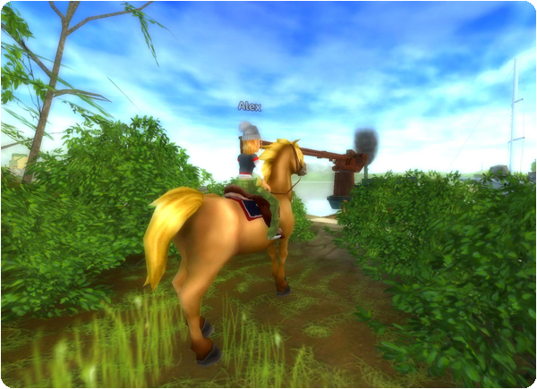

Üdv mindenkinek!
Itt az ideje a heti izgalmas frissítésnek!
Új főtörténeti küldetés:
A cselekmény egyre izgalmasabbá válik Jorvikban, és Elizabeth Valedale-ben aggódik. Beszélj vele, és hallgasd meg, mit mond!

Új felszerelés a lovadnak:
Új, ősz ihlette felszerelés, díszes nyergekkel, nyeregpárnával és kantárral érkezett a Valedale-i felszerelésboltba! A felszerelés megvásárlásához legalább 7. szintűnek kell lenned!
Jövő heti frissítés:
Az izgalmas főtörténet jövő héten további küldetésekkel folytatódik!